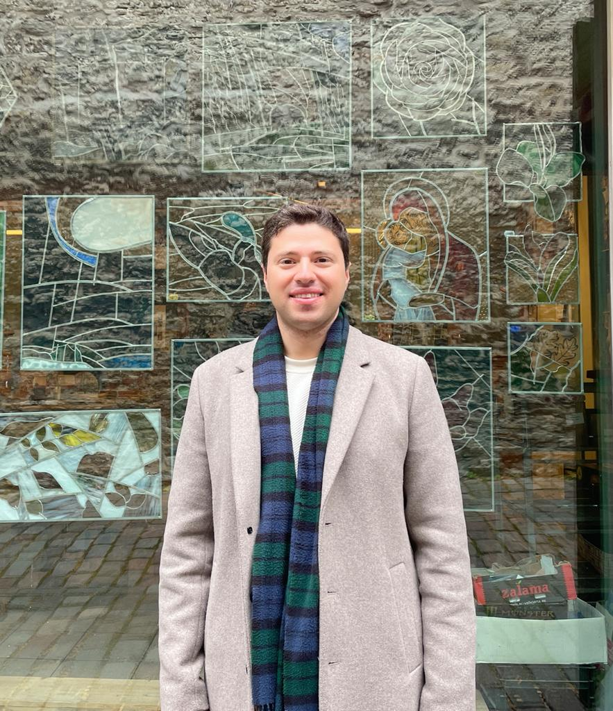

We are researchers at Aalto University School of Business, investigating how people form and navigate relationships with AI systems. Our research centers on relational dissonance — the divergence between an individual's ontological and relational framing of AI systems and the relational dynamics that emerge as their interaction with these systems unfolds. This work bridges human-computer interaction, organizational behavior, and responsible AI design.
Before this, I completed my PhD at Aalto University's School of Arts, Design and Architecture, exploring feedback cycles between physical and digital design processes. I also spent time at Huawei's Institute of Strategic Research, contributing to human-machine interaction strategy and co-inventing five international patents. My background spans architecture, interaction design, and creative technology — a trajectory shaped by a persistent interest in what emerges at the boundaries of technological interfaces.
My current work examines the relational dynamics of human-AI interaction. Through qualitative research with knowledge workers, I identified five distinct relational configurations — Director, Trainer, Partner, Student, and Consumer — that people adopt when working with AI tools. This research was accepted at CHI 2026, the premier conference in human-computer interaction. I am also developing the Relational Transparency Layer (RTL), a prototype system that surfaces relational patterns in real time to help users reflect on their evolving relationship with AI.
This research is supported by the Jenny and Antti Wihuri Foundation and the Foundation for Economic Education (LSR).